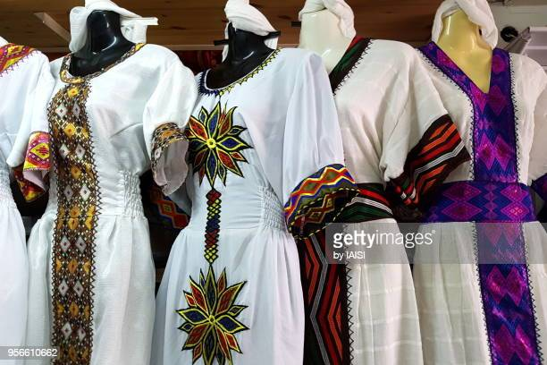
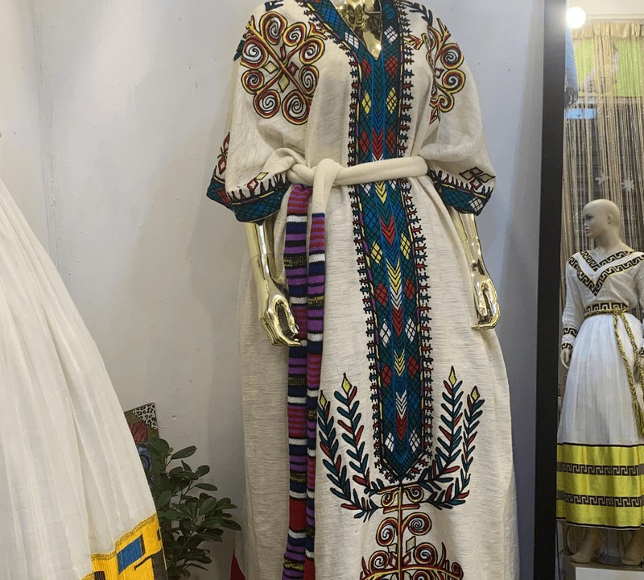
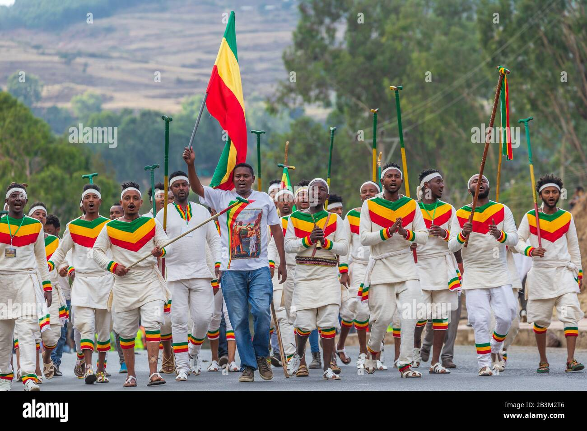

Traditional clothes in Ethiopia are exotic and made with culture-based cloth that represents our nation and Ethiopian's sense of pride and dignity.
Our cloth came from the old ancient culture of Ethiopia. Ethiopian traditional cloth is made of cotton that is woven together in long strips and then sewn together to make cloth. It takes about two to three weeks to make enough cloth for a dress.
Most people in Ethiopia wear the traditional cloth called "yahager lebse." On some cloth shiny threads are used to decorate it and make it more elegant. On the bottom of the skirt there can be a lot of patterns.

The ankle length dress is usually worn by Ethiopian and Eritrean women at formal events, holidays and invitations. But it comes in many forms nowadays. It is made of cotton fabric, and typically comes in white, grey or beige shades. Many women also wrap a shawl called a netela around the formal dress.
From variouse unique clothes across Ethiopia I included there of them: which is Tigiray, Gurage and Oromo

The various tribes and ethnic groups of Ethiopia have their own distinct Clothes, cultures and traditions. Ethiopian clothes are not divided according to their function but rather according to their uniqueness and individuality.